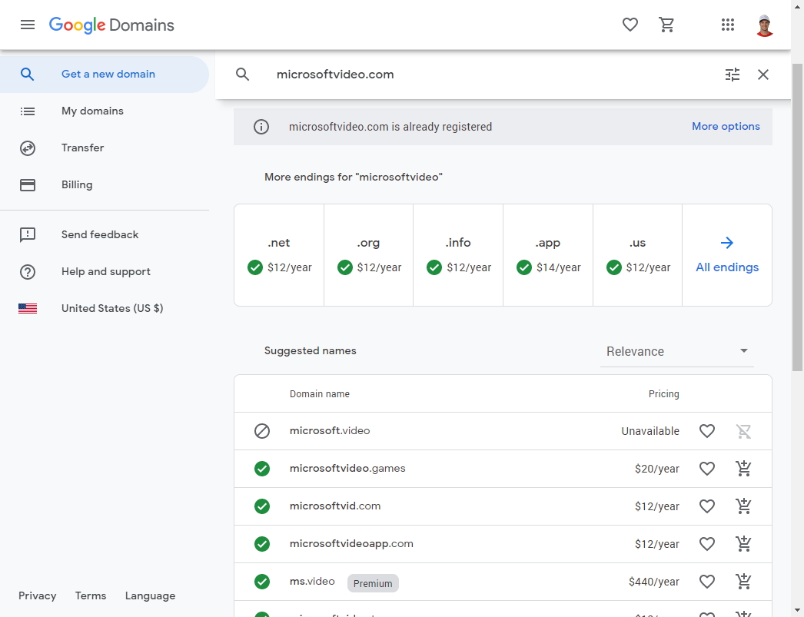

Stop Using So Many Domain Names
Table of Contents
Rant
One thing that frustrates me endlessly is major companies’ obsession with using countless domain names for public-facing websites and services. What do I mean by this? Companies should be using one root domain for public services and stick with it.
For example, I think Google does a great job at this (for the most part).
If I want to view my Google email, I go to mail.google.com. If
I want to look at my Google photos, I go to photos.google.com. If I want
shop Google hardware, I go to store.google.com.
This builds trust that if you’re visiting a Google service, the root domain should
be google.com, and helps to easily point out phishing attempts. A URL like
mygooglemail.com immediately stands out as being phishy (pun intended)
as it doesn’t contain google.com.
On the other hand, let me login to my university Office 365 account portal, and tally up the root domain names of the services listed:
sharepoint.com
dynamics.com
office.com
kaiza.la
windowsazure.com
powerapps.com
microsoft.com
microsoftstream.com
aka.ms
yammer.comSome of these even look like phishing domains. microsoftstream.com?
Just for fun, I looked at similar domains for sale to see how easy it would
be to just buy a similar looking domain.

While microsoftvideo.com is taken
(and fun fact, does not take you to a Microsoft site)
many similar domains like microsoftvid.com are for sale and could easily be
abused by phishers. Who could blame users? It looks just as official as a real
Microsoft site.
My point is, this seems ridiculous. How are normal users supposed to remember that all these different domains are controlled by Microsoft and are actually safe? Now, I understand the need for cookie-less CDN domains. But all the domains I just listed for Microsoft are right on the Office 365 portal as the “official” link to get to various services.
Microsoft has so many domains, they even have documentation on the lists of them for Office 365 and Windows so that administrators know what to whitelist in their firewalls. A brief selection of root domains:
aadrm.com
aka.ms
akamaihd.net
akamaized.net
aspnetcdn.com
azure-apim.net
azure.com
azure.net
azurerms.com
bing.com
cloudappsecurity.com
digicert.com
edgesuite.net
entrust.net
geotrust.com
gfx.ms
globalsign.com
globalsign.net
identrust.com
letsencrypt.org
live.com
live.net
lync.com
microsoft.com
microsoftazuread-sso.com
microsoftonline-p.com
microsoftonline-p.net
microsoftonline.com
msauth.net
msauthimages.net
msecnd.net
msedge.net
msft.net
msftauth.net
msftauthimages.net
msftconnecttest.com
msftidentity.com
msidentity.com
msn.com
msocdn.com
mstea.ms
o365weve.com
office.com
office.net
office365.com
omniroot.com
onenote.com
onenote.net
onestore.ms
onmicrosoft.com
optimizely.com
outlook.com
phonefactor.net
powerapps.com
public-trust.com
sfbassets.com
sharepoint.com
sharepointonline.com
skype.com
skypeassets.com
skypeforbusiness.com
svc.ms
symcb.com
symcd.com
trafficmanager.net
verisign.com
verisign.net
virtualearth.net
windows.com
windows.net
windowsazure.com
windowsupdate.com
xbox.com
xboxlive.com
xboxservices.comClearly, not all of these are owned/controlled by Microsoft, such as the certificate
domains like letsencrypt.org or vendors like optimizely.com, but the
vast majority are definitely owned by Microsoft.
And good lord, is that a lot of different domain names.
While Google is certainly better (especially for their consumer services), they still have their fair share of confusing domains. Off the top of my head:
google.com
withgoogle.com
goo.gl
goo.gle
g.co
docs.new
sheets.new
slides.new
tv.google
domains.google
googleblog.com
blog.google
blogspot.com
blogger.com
android.com
chromecast.com
web.dev
googlemail.com
googleapis.com
googlesource.com
doubleclick.net
google-analytics.com (only domain with a dash?)
googleadservices.com
googletagmanager.com
googleusercontent.com
googlevideo.com
gstatic.com
gvt1.com
ggpht.com
chromium.org
crbug.com
crrev.com(I’m ignoring their public cloud domains like appspot.com and firebase.com).
In conclusion, please use just one root domain for public services. It decreases phishing potential, promotes brand consistency, and makes it easier for regular users to identify official sites.